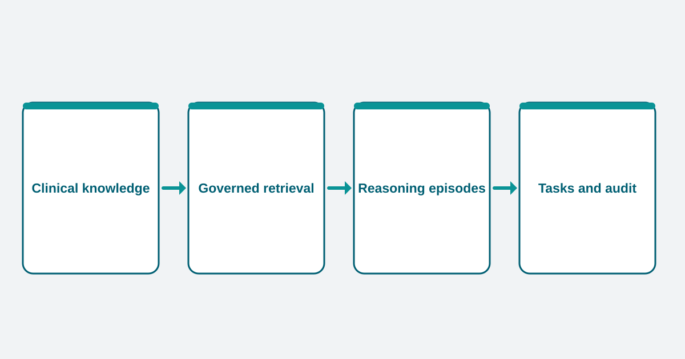

Clinical knowledge
Define meaningful conditions, anchor events and temporal patterns from reviewed clinical sources.
Active Research
An agentic framework for building clinically grounded, auditable multimodal reasoning benchmarks from longitudinal EHR data.

Electronic health records are long, irregular and multimodal. Static question answering and endpoint prediction can hide whether a model used the right evidence at the right time. TIMELY-Agent reconstructs clinically meaningful patient state before evaluation begins.
A reasoning episode is a compact, provenance-preserving view of patient history centred on a clinically meaningful question. It brings together temporally bounded structured data and relevant clinical text without reducing the record to a single label or exposing an entire admission at once.
Define meaningful conditions, anchor events and temporal patterns from reviewed clinical sources.
Retrieve relevant evidence through controlled interfaces inside secure local environments.
Align structured trajectories with clinical note fragments around meaningful questions.
Evaluate temporal grounding, cross-modal consistency and the use of supporting evidence.
TIMELY-Agent separates knowledge-facing work from patient-facing computation. Public clinical sources can support benchmark specification, while patient-level data remain within governed local infrastructure.
Public clinical sources support reviewed benchmark specifications.
Patient-level evidence remains within governed local infrastructure.
Reviewed specifications may cross into the local environment; real patient data do not cross out. This separation supports traceability without claiming that the current research prototype is a complete deployment or privacy guarantee.
Pilot implementations explore multimodal episode construction and behavioural auditing on critical-care data. These foundations inform the wider TIMELY-Agent framework while the research programme continues to develop.
Interested in trustworthy clinical agents, temporal reasoning or multimodal benchmark design? Contact the MAI Research Group.
Email the research groupPublications and project resources will be linked here when available.